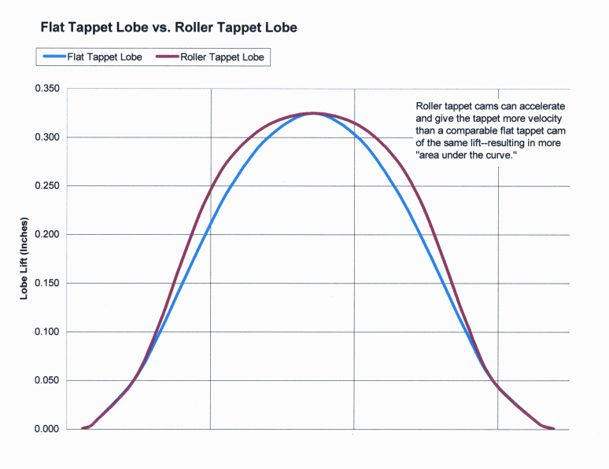
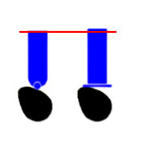

-
Re: High lift, solid flat tappet, roller rocker conversion k
Why try roller lifter? Any particular reason? From where i stand it makes more sense to stay flat tappet, especiallty considering the more aggressive opening ramps that can be had with our lifter diameter. All flat tappets have faster ramps initailly than rollers anway. -
Re: High lift, solid flat tappet, roller rocker conversion k
for the same reason why all the SBC powered cars I've had the joy of being in have benefited from roller lifters. The ramp rate isn't as important as having the valve hang open wider at every degree of duration which it is open for.a22770 wrote: Why try roller lifter? Any particular reason? From where i stand it makes more sense to stay flat tappet, especiallty considering the more aggressive opening ramps that can be had with our lifter diameter. All flat tappets have faster ramps initailly than rollers anway.
also, the weight factor is offset by less friction.
every SBC motor my friend Jay has ever built has benefitted from running a roller cam- even going from a similarly spec'd flat tappet cam in the exact same motor- everything else unchanged.
the better question would be "why not?".
Also, for what it's worth- larry wildmer at endyne sent me an email when I requested info about RB26 cams… and he explicitly outlined that the reason he goes for Tomei cams is because they have a less agressive and more progressive ramp-rate, which prolongs life of the parts and allows the cam to roll across the lifter bucket with much less effort, even in high lift applications.
In your professional opinion… why would a faster & more aggressive valve open/close ramp be beneficial in comparison to having it ramp up less aggressively but hang open further and for longer at it's peak with less friction due to the roller bearing? wouldn't that allow us to run lower lift cams and still maintain adequate airflow similar to that of a higher lift flat tappet cam? I figure it's not only lift that matters, but progression of lift. When it's averaged out, slightly lower lift open for a longer portion of the duration seems like a better way to get air than having an aggressive ramp up to the max lift for a smaller fraction of the duration.
no? i thought thats what roller cams provided.
this picture combines both what you say as a benefit to flat tappet (aggressive lift) and what I was thinking a roller lifter provides (progressive ramp, longer valve open time at peak lift)… and says that rollers provide BOTH of those enhancements.
 -
Re: High lift, solid flat tappet, roller rocker conversion k
that's a little disingenuous
the roller cams in this thread still rely on the flat bottomed lifter on the cam, and that's what follows the lobes
if the lifter was a roller bottom or if the roller cam ran directly off the lobes, THEN we might see a different ramp profile
 -
Re: High lift, solid flat tappet, roller rocker conversion k
that's not what im trying to portray. I'm legitimately asking why a roller is no better than a flat tappet in this case considering a227700 knows way more about engines than I do, but I've never seen a roller or retro-roller conversion NOT make more power with similarily spec'd cams. It's a legit question for someone who knows a lot more than I do- whom I hope replies with a good answer instead of "because i build engines and you don't, that's why".G-E wrote: if the lifter was a roller bottom… THEN we might see a different ramp profile
that is exactly what i am talking about. (i.e.- i have roller follower lifters that will work with modified guides).
G-E wrote: that's a little disingenuous
There are some good ideas that can be put into practice, and combining these two efforts can only make the VG more appreciable, no? -
Re: High lift, solid flat tappet, roller rocker conversion k
well one major premise of these roller rockers was the angles to allow larger lift, if they can do that great!
but the idea that these prototypes reduce friction is dumb, the largest point of friction is the lifter of course, followed by the rocker shaft, and neither of those were addressed -
Re: High lift, solid flat tappet, roller rocker conversion k
well jessel developed a set almost identical to these for all the nissan campaign motors, so they address something worthy of production :-) a227700 is in the right direction- but the whole shebang would make the SOHC VG something fierce. -
Re: High lift, solid flat tappet, roller rocker conversion k
the bolded line has me wondering… why does the lifter diameter matter at all if the tapet surface itself has a larger circumference than a roller follower footprint? maybe there's just something i'm not really getting from all this and as to why a roller follower is not a good idea.a22770 wrote: Why try roller lifter? Any particular reason? From where i stand it makes more sense to stay flat tappet, especiallty considering the more aggressive opening ramps that can be had with our lifter diameter. All flat tappets have faster ramps initailly than rollers anway. -
Re: High lift, solid flat tappet, roller rocker conversion k
[quote]Careless wrote:Originally posted by a22770a flat bottom lifter will meet the highest point of the lobe way sooner than a roller or pushrod, but by the same token it goes down faster, look at the quickie diagram I made to get any idea how that worksOriginally posted by a22770
the plus side to having a more focused point to coordinate with is that the lobe shape can be tailored for more mid-lift opening, the the oncoming shape can be different than the trailing side too… the biggest benefit may be the reduced velocity and lower end speed especially of the rocker/lifter going up = better longevity/less stress, possibly even less float -
Re: High lift, solid flat tappet, roller rocker conversion k
i realize the flat tappet actuation on a cam lobe. i was just confused with the "diameter" part of the sentence. i still think there is power/benefit to be made with a roller follower lifter.G-E wrote: a flat bottom lifter will meet the highest point of the lobe way sooner than a roller or pushrod, but by the same token it goes down faster, look at the quickie diagram I made to get any idea how that works -
Re: High lift, solid flat tappet, roller rocker conversion k
Not sure i will give the best explanation, but here goes. If you look at how the lifter rises with cam rotation, it can only lift at any one point on the lifter, as the contact point moves away from the center of the lifter it will accelerate faster. cam rpm stays the same but contact point moves outward to a larger radius. larger radius = longer distance, longer distance in same amount of time = faster speed. The larger diameter allows the camgrinder to move the contact spot farther out. and since we have larger diameter lifters than most cars, gives us some room to explore with different opening and closing ramps. Hope is helps. -
Re: High lift, solid flat tappet, roller rocker conversion k
still awailible? put me down for a set. u take pay pal? -
Re: High lift, solid flat tappet, roller rocker conversion k
Still available, has porsche 911 adjuster now for longer life. -
Re: High lift, solid flat tappet, roller rocker conversion k
Why aren't there more pics? -
Re: High lift, solid flat tappet, roller rocker conversion k
+1 on more pics DD:
DD:
86 Black Turbo 5spd
The Fallen:
84 red n/a auto Slicktop, 86 Black 2+2 n/a 5spd
Parting Currently:
86 White Turbo 5spd, 88 n/a 5spd, 84 AE, 88 Shiro #64
Garage Sale -
Re: High lift, solid flat tappet, roller rocker conversion k
do you take pay pal? and i have to do some thinking if i by these or http://www.jpc.com.au/?p=340

Copyright © 2006–. All rights reserved. Privacy Policy